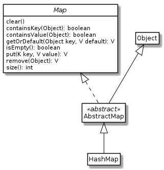

HashMap¶

La classe HashMap ens ofereix un contenidor de parells clau-valor. La seva implementació està dissenyada perquè trobar el valor a partir de la clau sigui molt ràpid.
Per exemple, considera l’exercici
Exercici 2. ☆ El llistat de contactes. Per implementar l’opció
mostra «nom», vam haver de recòrrer la seqüència de contactes i, un per un,
anar demanant si el seu nom coincideix amb el nom cercat. En el pitjor dels
casos, el que cerquem és al final de la seqüència o, fins i tot, ni hi és!
Si haguéssim aparellat cada contacte amb el seu nom com a clau, HashMap ens
hagués permés trobar de seguida el contacte.
Per què HashMap funcioni i ho faci correctament, cal que la clau tingui unes
característiques especials. Una d’elles és que ha de ser un objecte. És a dir,
no val un tipus primitiu com a clau. Una altra és que, la classe de la clau ha
de definir correctament els mètodes equals(Object) i int hashCode()[1]. Finalment, l’estat de la clau no hauria de modificar-se mentre
faci de clau. Per sort, les classes que habitualment fem servir (ex.
String, Integer) estan ben definides.
Veiem un exemple que fa servir un HashMap:
1 2 3 4 5 6 7 8 9 10 11 12 13 14 15 16 17 18 19 20 21 22 23 24 25 26 27 28 29 30 31 32 33 34 35 36 37 38 39 40 41 42 43 44 45 | ~/$ jshell
| Welcome to JShell -- Version 11.0.1
| For an introduction type: /help intro
jshell> Map<String, ArrayList<Integer>> notes = new HashMap<>()
notes ==> {}
jshell> notes.put("Marc", new ArrayList<Integer>());
$2 ==> null
jshell> ArrayList<Integer> notesMarc = notes.get("Marc");
notesMarc ==> []
jshell> notesMarc.add(5);
$4 ==> true
jshell> notesMarc.add(4);
$5 ==> true
jshell> notesMarc.add(6);
$6 ==> true
jshell> notes.get("Marc")
$7 ==> [5, 4, 6]
jshell> notes.put("Aina", new ArrayList<Integer>());
$8 ==> null
jshell> notes.get("Aina");
$9 ==> []
jshell> notes.get("Aina").add(8);
$10 ==> true
jshell> notes.get("Aina").add(9);
$11 ==> true
jshell> notes.get("Aina").add(7);
$12 ==> true
jshell> notes.get("Lin");
$13 ==> null
jshell> notes.getOrDefault("Lin", new ArrayList<Integer>());
$14 ==> []
|
Fixa’t que, per definir un HashMap ens cal indicar quines són les classes de
la seva clau i el seus valors.
Exercici 1. Què podem fer amb un HashMap?¶
Al diagrama que apareix en aquesta pàgina, es mostra la relació de HashMap
amb diferents classes i interfícies. El diagrama també mostra alguns dels
mètodes que ofereix la classe.
En aquest exercici se’t demana que cerquis què ofereixen els diferents mètodes
de la classe HashMap. Com a mínim els indicats al diagrama.
Per cada mètode, crea un exemple d’ús que demostri el seu funcionament.
Exercici 2. ☆ El llistat de contactes eficient¶
Farem una nova versió de l’exercici del llistat de contactes, aquest cop aprofitant les
funcionalitats de la classe HashMap.
El programa oferirà les mateixes funcionalitats de la versió anterior, però ara trobarà la informació molt més ràpidament.
Per preservar l’ordre dels contactes, et proposo dues opcions:
- manté una llista en paral·lel, amb l’ordre dels contactes
- fes servir la classe LinkedHashMap que et permet recuperar els elements en l’ordre introduït.
Assegura’t també que la funcionalitat troba «num» s’executa molt
eficientment. En concret, planteja’t com pots aconseguir que els contactes amb
el mateix número de telèfon, es puguin trobar directament.
| [1] | Hi trobaràs múltiples discussions al respecte. Per exemple, mira
aquesta de stackoverflow.
La idea bàsica és que HashMap fa servir una funció de hash per a
distribuir les claus. Aquesta funció es basa en el valor que retorna
hashCode() per cada instància. Mira la descripció de hashCode()
a la documentació oficial de Java, per fer-te una idea de les
característiques que se n’esperen. Si hashCode() no està ben definit,
HashMap no funcionarà bé, o fins i tot, no funcionarà!. |
Ref. 21.2